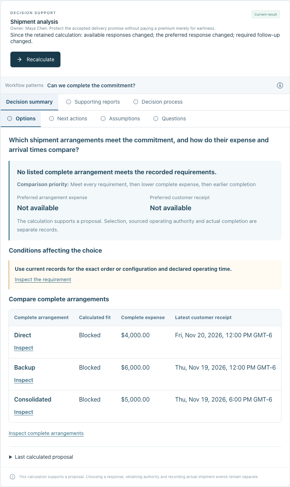

Purchase orders and carrier records changed overnight. Maya needs the cases that require intervention before their booking windows close. Her team already has exports, owners and a dashboard. The developer uses the CLI to repeat the authored assessment across orders, then opens one retained exception in a focused React desk.
This integration uses a cost-first operating profile with Direct, Backup and Consolidated. It is a distinct fictional case from the Marketplace registration-and-verification story. The same native run can continue between these compatible CLI and SDK clients; matching titles alone do not make other workflow definitions interchangeable.
Screen the current orders, not yesterday's headlines.
The adapter maps the complete current source snapshot into the pinned app: order revision, all units, quotes, capacity, cutoffs and scope-specific confirmations. It preserves what each received document actually says. It does not quietly change an old confirmation to cover a new revision.
const solved = await invokeCLI(['workflow', 'solve', '--run', preparedFile,
'--created-at', createdAt, '--timeout-ms', String(options.timeoutMs ?? 30000),
'--output', path.join(directory, 'review.json')], transcript);The CLI evaluates the connected workflow. Company code organizes its findings into the intervention queue. A successful command can yield a complete blocked finding; a malformed currency or incomplete assessment is a different state.
| Queue item | Finding | Next work |
|---|---|---|
| Unchanged supported shipment | Direct remains supported at $4,000 at 8 a.m. | Consider the current proposal. |
| ORD-105 revision 2 | Direct has capacity for 99 of 100 units; Backup costs $6,000 above the $5,000 limit; Consolidated has an old-scope confirmation. | Obtain genuine current confirmation or reconsider the response. |
| Authority or input exception | A specific required record is absent or the source cannot be evaluated. | Route the record or correction to its owner. |
The complete worked queue retains all rows. The company owns its mappings and attention labels; the authored assessments establish the findings.
Continue ORD-105 without reconstructing its basis.
The CLI saves a native workflow run, including its exact definition, inputs, original promise, source references and calculated history. The SDK desk verifies compatibility before reopening it:
export function openReviewJourney({ lab, value, app, definition, compatibleDefinitions = [] }) {
const run = lab.workflows.openRun(value);React owns the record forms, persistence and browser lifecycle. The SDK owns validation, dependent-result staleness, evaluation and report output. Opening an unchanged current run neither creates a choice nor resets it merely to obtain a fresh headline.
One new scoped confirmation changes the available response.
The carrier issues SLOT-SHIP-105-REV2 for ORD-105 revision 2, Consolidated at SP-B, destination DC-X and the required loading interval. Its reference and covered revision differ from the old document because this is new evidence. The validity interval, order, quotes, Direct capacity and $5,000 limit stay fixed.
Old confirmation covers revision 1.
None of the three supplied complete responses passes for ORD-105 revision 2.


New confirmation covers revision 2.
Consolidated is preferred at $5,000. The other options' capacity and expense failures remain.

Before the new confirmation, none of the supplied complete arrangements passes. After applying it and recalculating, Consolidated is preferred at $5,000, arriving Thursday at 6 p.m. Direct remains capacity-blocked and Backup remains over budget. The received document resolves one requirement; it waives no other condition.
return lab.workflows.solve({ run: current, ...(execution ? { execution } : {}), createdAt: atTime(at) });Unapplied edits remain drafts. Applied changes make dependent earlier results stale until recalculated. The desk presents the output through the shared report host:
: <WorkflowReportsView output={output} definition={desk.journey?.definition} pending={desk.hasDraft}
blockedReason={status === REVIEW_STATE.INVALID ? 'Resolve the displayed input issues before using a current finding.' : ''}
busy={running} readOnly />}WorkflowReportsView renders the authored Decision summary, Supporting reports and Decision process. Configuration supplies shipment wording and bindings. Changing the React interface introduces no second set of shipment rules.
Keep the proposal separate from what the business did.
Maya can choose the supported response. The worked continuation then retains separately scoped fictional records:
| Record | What it supports |
|---|---|
| FIN-SHIP-105 | Specific authority for the $5,000 selected arrangement. |
| BOOK-SHIP-105 | The carrier reservation linked to the current quote, order and authority. |
| POD-SHIP-105 | All 100 units accepted Thursday at 6 p.m., before the original Friday 5 p.m. promise. |
The authored operating checks examine that linked basis. A feasible proposal is not a booking, and a booking is not accepted delivery. Downloading the native continuation preserves those distinctions and lets the CLI reopen the same case. It does not authenticate a document or perform the shipment.
The developer has built an exception-handling path around the existing assessments: screen current records, direct attention to the blocker, apply genuinely new evidence and carry the same case through a supported response. The company still supplies its source integration, access controls, durable storage and operational authority.